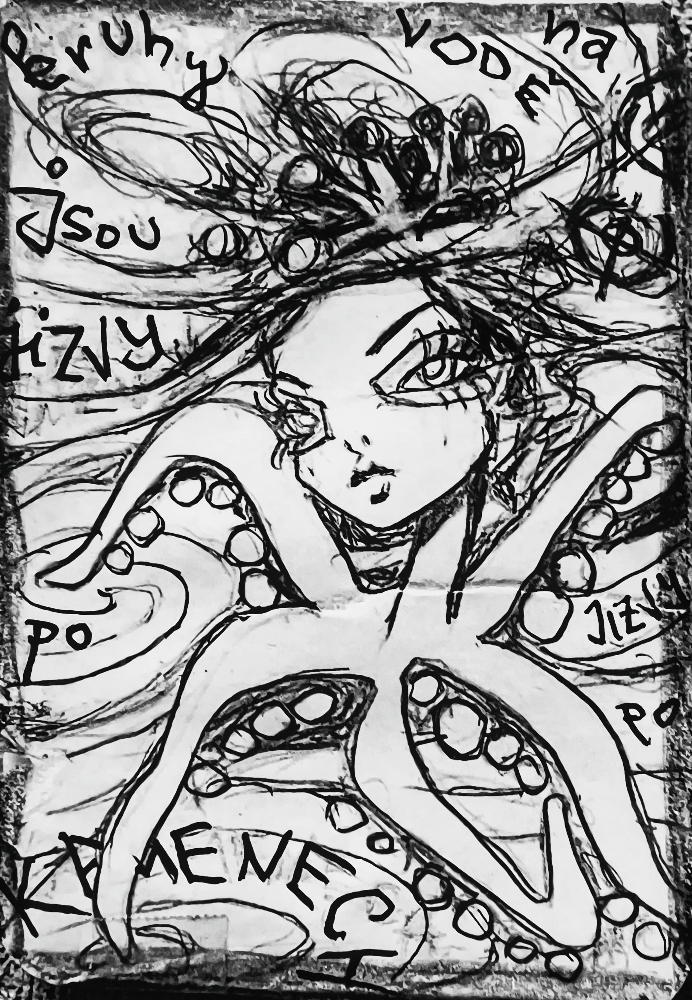

Zapsáno rukou, která nechtěla nic vysvětlit.
O MOŘSKÉ HVĚZDICI
Kruhy na vodě jsou jizvy po kamenech
—
Mořská hvězdice ležela na dně. Tichá. Plochá. Nerozhodná.
—
Nad ní se voda vlnila. Kruhy se šířily. Jeden za druhým. Dokonalé. Pomíjivé. Krásné.
—
„To je poezie,“ řekla ryba, co rapuje proudem. „To je geometrie,“ řekla chobotnice, co improvizuje jazz. „To je náhoda,“ řekla medúza, co hraje na triangl.
—
Ale hvězdice mlčela. A pak řekla: „Ne. To jsou jizvy.“
—
„Jizvy?“ „Po kamenech.“ „Po věcech, co dopadly.“ „Po rozhodnutích, co se nedaly vzít zpět.“
—
Každý kruh začínal nárazem. Kámen. Kapka. Pád. A pak se šířil. Do dálky. Do šířky. Do jiných životů.
—
„Ale vždyť se voda zase uklidní,“ řekla sova, co přiletěla omylem. „Ano,“ řekla hvězdice. „Ale to neznamená, že se nic nestalo.“
—
Mořská hvězdice znala dno. Znala ticho po dopadu. Znala chvíli, kdy se kámen dotkne písku a už není jen kámen — je vzpomínka.
—
„A co s tím?“ ptala se myš, co zapisuje do skulin. „Nic,“ řekla hvězdice. „Jen to vidět. Jen to vědět. Jen to neplést s krásou.“
—
A tak se začalo říkat, že někde na dně žije hvězdice, která ví, že kruhy na vodě nejsou jen obraz. Jsou to jizvy. Po kamenech. Po slovech. Po činech.
—
A že když vidíš kruh, můžeš se ptát: „Co dopadlo?“ „Co se změnilo?“ „Co už nejde vzít zpět?“
—
A možná zjistíš, že i ticho má paměť. A že voda si pamatuje všechno. I když to neřekne.
—
KONEC